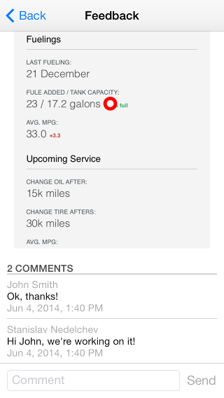

AppFeedback: Workflow
The feedback functionality is triggered on the device shake gesture. This gesture provides an easy and unobtrusive way to incorporate feedback into your application. After you shake the device, a popup with actionable items is shown on the screen.
The sample application consists of a single screen, displayed below.
Selection Popup
This screen is shown on device shake.
It contains items for the specific actions you can perform:
- Submit feedback
- View feedback
- Settings
Submit Feedback
Tapping on this item opens a view where the user can submit feedback about the application. This view contains a screenshot of the application, taken at the time of shaking the device, as well as a prompting text.
The user can tap multiple times anywhere on the screenshot and leave a comment, describing what is the problem within that part of the screenshot.
After the user has left his comments, tapping the “Send” button will send all the comments to the backend.
Note that every comment is sent as a new feedback thread to the backend.
If a user sends feedback for the first time, a screen prompting for his name is displayed.
The user can also choose to send feedback anonymously.
View Feedback
All feedback left from that device is displayed in the Your Feedback view. It is split into three parts:
Open feedback threads, which need to be resolved from within Telerik Platform. Resolved threads *All threds, both open and resolved.
Each item in the list has its creation date, description and its status in the lower right corner. Tapping an item leads to a details page, described below.
View Feedback Details
This screen is opened by tapping an item from the Your Feedback view and allows the user to examine further details about a specific feedback thread. Such details include a screenshot and a list of comments left from users within Telerik Platform, replying to that thread. The user can also add another comment to the feedback thread.

Settings
In case the user wants to change or view his name, he can do so by visiting the Settings screen.